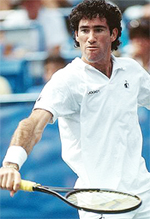

Previous: The Set-up Game | 🏠 Strategy Home | Next: The Strategy Zone - Groundstroke Finishes
The Set-up Point
Comprehensive unified tennis knowledge base — Fundamentals, Stroke Analysis, Reference Library, and more
The Set-up Point
Brad Gilbert

What's the Set Up point? Learn the secret directly from Brad.
For some pros (the ones not making any money) and most recreational players there are two kinds of points: ad points and all the rest. Wrong.
I treat the point that can get me or my opponent to an ad point as a major moment because it offers a major reward. That reward is the opportunity to win (or convert) a game.
I call any point that precedes an ad point a Set-up Point. The point played at love-30, 30-love, 15-30, 30-15, 30-30, and deuce are all Set-up Points for one or both players.
When I'm looking at one of those scores, bells are ringing inside me, especially at 30-30 (or at deuce) when we both have a chance to step up and get to an ad point. Those are the points that really get the juices going.
Each one is a big swing because it decides who gets a chance to cash in on the game. And if the set or match comes with winning that game the Set-up Point's value is multiplied (I think of those moments as Super Set-up Points).
If I win a Set-up Point at 30-30 or deuce, I'm only one point away from winning the game. My opponent is three points away. A big difference. If I win a point at 30-15 (to go up 40-15) the spread is ever bigger.
Psychologically it's all positive. Winning a set up point allows me to move into a strong position mentally whether I'm serving or receiving.
Often at the club level if your opponent is serving and you win your Set-up Point (moving to ad out) it may be all you need to do. A double fault can give you the game.

Winning enough Set-up points in your return game creates pressure that can lead to opponent double faults.
I know if I get enough ad points opportunities (while limiting those of my opponent) I'll probably win the match. And the Set-up Point is where those opportunities are created.
In baseball you can't get a hit until you come up to the plate with a bat in your hands. In tennis you can't win a game without a convert opportunity. The Set-up Point can give you the chance to come up to the plate (or to keep your opponent from doing so). It's very important and it gets my respect.
What's best about Set-up points at the club level is that your opponent is usually unaware of the weight they carry. They tend to play a Set-up point just like any other point, without a great deal of thought or focus.
30-15 just doesn't get their attention, 30-30 doesn't alert them. Their wake-up call is the ad point, not the point preceding it, the Set-up Point.
The Set-up point is when you make sure your mind is focused, your body prepared, and your plan is in place. It's when you can catch them unaware.
Rule 1
The Set-up point gets you up to the plate when it counts.
When a Set-up Point arrives (either for me or the other player) I pay attention. The primary goal I have in mind is this: Get it in or get it back!
That means if I'm serving, I want to get the ball in. If I'm receiving, I want to get the ball back, and preferably to a spot that forces my opponent to hit a weaker shot.
And it's even more important at 30-30 or deuce. These points require more caution. Or, to put it another way, they require less casualness or carelessness.
Serving at 40-love you might want to try busting one in, going for your annual ace. If you're receiving, may be you'll try a spectacular return. Not at 30-30 or deuce. Let your opponent go for the glory.
Serving at 30-love the server tends to get careless because that score feels like it's bigger than it is. Pay attention! Win that point and you get three straight convert opportunities. Get that first serve in. Don't double-fault.
What's surprising is how often club players will double-fault or carelessly slam a service return long or into the net on a Set-up Point. They've just given their opponent a convert opportunity (or denied it to themselves) free of charge because they didn't understand the significance of the point and what it can mean to the dynamics of the match.
That's unintelligent tennis.
Rule 2
Once the point is under way, be sensible. Don't get fancy. Don't get brilliant. No stupid errors.
Let your opponent go for the glory trying unrealistic shots.
It's amazing how often recreational players will try for the "miracle shot" in the middle of a rally when neither player has any advantage. That may be okay with a big lead, although even then I dislike seeing it and absolutely hate doing it.
At crucial moments a risky shot is a sign of a player who doesn't understand the game. Let your opponent play brain-dead when it counts.
This doesn't mean you should play patty cake tennis. It means you should manage your shots, avoiding low-percentage shots that carry unnecessary risk at inappropriate times.
Pressure Paralyzes
Winning the Set-up Point can create pressure. All players are most tense when something is at risk. Losing that Set-up Point can put your game, set, or match at risk.
Pressure will be layered on your strokes and confidence, and to some degree pressure paralyzes most recreational players. Recognizing the importance of winning a Set-up Point and approaching it correctly will consistently keep pressure off you and place it on your opponent.
Brad Gilbert is widely recognized as one of the top coaching minds, as well as one of the most direct and insightful television commentators in tennis. As a coach Brad has worked with numerous elite pro players including Grand Slam champions Andre Agassi, Andy Roddick, and Andy Murray. Ranked in the world top 5 in his playing career, Brad had wins over legendary champions including Boris Becker and John McEnroe and won 20 ATP titles. Brad is also the owner of Tennis Nation, one of the top tennis pro shops in the country for the true enthusiast, located in San Rafael, California.
Brad Gilbert: Winning Ugly
Brad Gilbert's Winning Ugly is one of the most highly regarded and valuable tennis books ever written. Covering the strategic and mental realities of competitive play from the tour to the club level, Winning Ugly is packed with Brad's original insights about how matches are really won, and strategies any player can apply to dramatically improve their match results. A classic, must read for all tennis players, Winning Ugly is now available as an ebook, an audio book, as well as in the second print edition with a new forward by Andy Murray.
Click Here to Order!
Source: tennisplayer.net archive — The Set-up Point.docx (John Yandell teaching library, 2002-2022). Extracted and rendered as HTML for Tennis Future Lab.